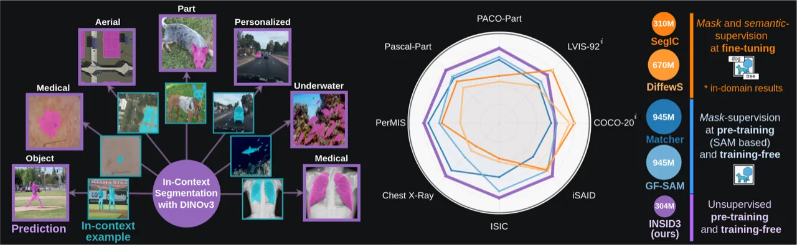
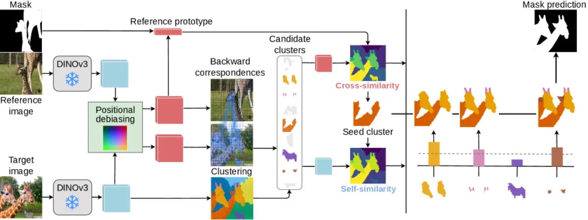
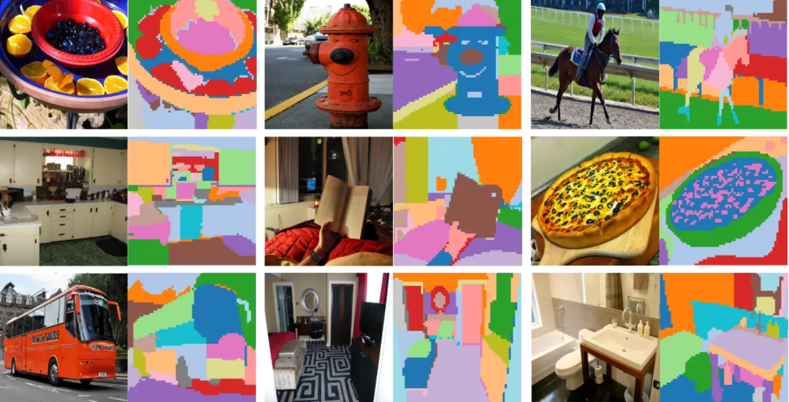
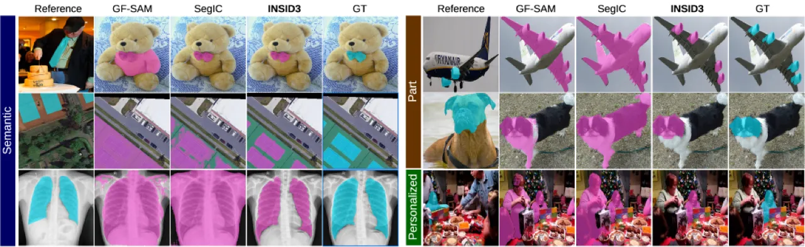
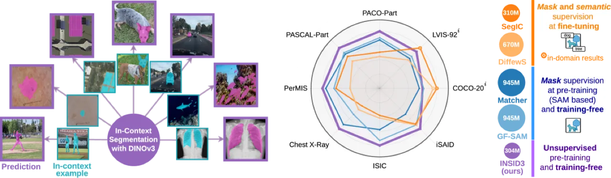

INSID3 提出了一种极简主义的 in-context segmentation（ICS）框架：给定一个标注好的参考示例，模型仅依靠冻结的 DINOv3 特征，在无需任何 fine-tuning、分割解码器或辅助模型的情况下，对目标图像中的语义类别、object part 或个性化实例完成分割，并在多个 benchmark 上全面超越此前方法。
In-context segmentation（ICS）旨在给定一个或几个标注示例，分割任意概念——无论是 object、part 还是个性化实例。现有方案存在两条路线的固有局限：(1) fine-tuning 路线提升了域内精度，但损害了泛化能力；(2) 多模型组合路线保留了泛化性，但引入了架构复杂度，且 SAM 的分割粒度固定，无法灵活覆盖 semantic / part / personalized 三个层次。
"Can a single self-supervised backbone support both semantic matching and segmentation, without any supervision or auxiliary models?"
作者发现，大规模自监督预训练的 DINOv3 密集特征同时具备强语义对应能力和空间连贯结构，但其中混杂了显著的 positional bias——特征相似性会被图像内的相对空间位置所污染，必须加以去除才能获得可靠的跨图像匹配。

INSID3 流程共四步：① Positional Debiasing（去除位置偏差），② Fine-grained Clustering（聚类分解目标图像为连贯区域），③ Seed-cluster Selection（通过 backward correspondence 筛选候选簇，再用 cross-image similarity 定位种子簇），④ Cluster Aggregation（结合 cross-similarity 与 self-similarity 生成最终 mask）。

DINOv3 特征存在显著的 positional bias：即便使用均匀低复杂度图像（"noise images"），提取的特征仍保留明显的空间结构，使得跨图像的相似度图被位置信息污染。INSID3 在噪声图像上提取特征矩阵 Fnoise ∈ ℝP×D，对其做 PCA 取前 s 个主成分构成位置子空间 B，随后将参考图和目标图特征投影到该子空间的正交补空间： F̃ = F(1D − BB⊤)，从而在不需要任何训练的情况下有效解耦语义信息与位置信息。

对去偏后的目标图特征 F̃t 做 agglomerative clustering，聚类粒度由阈值 τ 控制（论文设置 τ = 0.6）。聚类结果将目标图分解为一组空间连贯的候选区域 {Gk}，其空间结构对 part 和个性化分割尤为关键。
先以 backward correspondence 在去偏空间中筛选候选簇 Ccand（即参考区域中有足够多 patch 将其最近邻落在该簇内的候选集合）；再计算各候选簇原型 p̃kt 与参考区域原型 p̃r 的 cross-image similarity score：skcross = ⟨p̃kt, p̃r⟩，取得分最高的簇作为 seed cluster G*。
以 seed cluster 为锚点，将其余候选簇中语义相近的区域融入最终预测。融合 cross-image similarity（语义对齐）与 self-similarity（与 seed cluster 的内部亲和度）两项得分，阈值 α = 0.2 控制合并力度；最终 mask 经 CRF refinement 提升边界精度。
在三类 one-shot 分割任务上评估：语义分割（COCO-20i、LVIS-92i、ISIC、SUIM、iSAID、Chest X-Ray）、part 分割（PASCAL-Part、PACO-Part）、个性化分割（PerMIS）。指标均为 mIoU（%，↑）。
| 方法 | Encoder | #Param | LVIS-92i | COCO-20i | ISIC | SUIM | iSAID | X-Ray | PASCAL | PACO | PerMIS | Avg |
|---|---|---|---|---|---|---|---|---|---|---|---|---|
| Task-specific fine-tuning: Semantic + mask supervision | ||||||||||||
| SegGPT | ViT | 354 M | 18.6 | 56.1 | 37.5 | 34.9 | 30.9 | 87.5 | 35.8 | 13.5 | 18.7 | 37.1 |
| DiffewS | Stable Diffusion | 890 M | 31.4 | 71.3 | 27.8 | 48.9 | 47.5 | 41.6 | 34.0 | 22.8 | 35.2 | 40.1 |
| SegIC | DINOv2 | 310 M | 44.6 | 76.1 | 25.3 | 52.5 | 46.1 | 34.5 | 39.9 | 25.9 | 51.8 | 44.1 |
| Training-free: Mask-supervised pre-training | ||||||||||||
| Matcher | DINOv2 + SAM | 945 M | 33.0 | 52.7 | 38.6 | 44.1 | 33.3 | 70.8 | 42.9 | 34.7 | 63.8 | 46.0 |
| GF-SAM | DINOv2 + SAM | 945 M | 35.2 | 58.7 | 48.7 | 53.1 | 47.1 | 51.0 | 44.5 | 36.3 | 54.1 | 47.6 |
| GF-SAM + our debias | DINOv3 + SAM | 945 M | 34.6 | 55.9 | 51.8 | 52.9 | 47.6 | 60.0 | 46.2 | 36.1 | 54.5 | 48.8 |
| Training-free: Unsupervised pre-training | ||||||||||||
| INSID3 (ours) | DINOv3 | 304 M | 41.8 | 57.6 | 54.4 | 54.9 | 52.1 | 78.8 | 50.5 | 38.7 | 67.0 | 55.1 |
INSID3 在九个 benchmark 的平均 mIoU 为 55.1%，相较最强 training-free 基线 GF-SAM 提升 +7.5%，同时参数量仅为其 1/3（304 M vs 945 M），且完全不依赖 mask 级别的预训练监督。

在语义对应任务 SPair-71k 上，INSID3 的 debiasing 策略对 DINOv3 特征的 PCK@Tτ 有稳定提升。实验表明，DINOv3 比 DINOv2 的 positional bias 更明显（特征更强，位置结构也更突出），但经过 debiasing 后 DINOv3 的语义对应质量显著超越 DINOv2。

论文在 COCO-20i 和 PASCAL-Part 上验证了各模块的贡献：去除 positional debiasing 会导致语义对应精度显著下降；去除 clustering 或 aggregation 均会降低 mIoU；debiasing rank s 和聚类粒度 τ 均有最优区间（分别约 s=16、τ=0.6），对超参数变化具有一定鲁棒性。此外，论文对比了多种 debiasing 替代策略（DINOv2 vs DINOv3 中的位置偏差程度、不同投影方式），验证了基于噪声图像 PCA 的方案最为简洁有效。
INSID3 完全依赖单一 DINOv3 backbone 的特征，其性能上限受限于该 backbone 的表征能力。若 DINOv3 特征在某类图像上匹配能力不足（如高度抽象的艺术图像），方法可能失效。
方法在目标图像上做 agglomerative clustering 并通过 CRF refinement 后处理，这两步在大分辨率图像上具有较高计算开销，实时推理可能受限。论文中未提供具体推理速度数据。
聚类粒度 τ 和 aggregation 阈值 α 在所有 benchmark 上均使用相同设置（τ=0.6、α=0.2），尽管消融实验表明对超参数有一定鲁棒性，但极端场景（如医学图像 vs 遥感图像）可能仍需调整。
极简主义设计的代价是在依赖 SAM mask 质量的场景（如细密纹理分割）中，相较 GF-SAM 等利用 SAM 强分割先验的方法仍有差距（见 Table 1 部分 benchmark）。